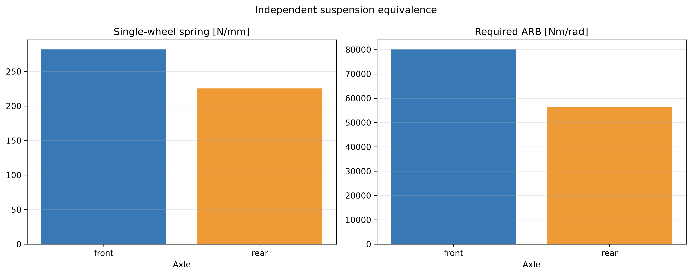
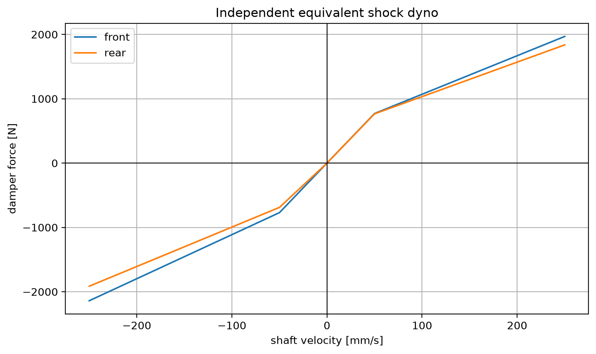

將 roll、heave 等效為單輪懸吊設定，分析單輪彈簧、ARB 與阻尼設定架構。
| category | name | number |
|---|---|---|
| 導出量 | hl_independent_front_spring_n_per_mm | 281.74458802133165 |
| 導出量 | hl_independent_rear_spring_n_per_mm | 225.39567041706533 |

| axle | wheel_rate_n_per_m | spring_rate_n_per_m | spring_rate_n_per_mm | base_roll_stiffness_n_m_per_rad | required_arb_stiffness_n_m_per_rad | shock_low_speed_damping_n_s_per_m | shock_high_speed_damping_n_s_per_m |
|---|---|---|---|---|---|---|---|
| front | 70436.14700533291 | 281744.58802133164 | 281.74458802133165 | 55028.23984791634 | 80021.1704145866 | 15405.896304635111 | 6419.123460264629 |
| rear | 56348.91760426633 | 225395.67041706532 | 225.39567041706533 | 43321.04785415996 | 56351.89929125982 | 14544.977698623587 | 5741.438565246152 |
共 41 筆資料；完整數據請開啟 CSV。
| category | name | number |
|---|---|---|
| 導出量 | hl_independent_damper_front_force_250_mm_s_n | 1968.5311944811529 |
| 導出量 | hl_independent_damper_rear_force_250_mm_s_n | 1837.2603408787686 |

| axle | low_bump_n_per_mm_s | low_rebound_n_per_mm_s | high_bump_n_per_mm_s | high_rebound_n_per_mm_s | knee_velocity_mm_s |
|---|---|---|---|---|---|
| front | 15.40589630463511 | 15.40589630463511 | 5.991181896246987 | 6.847065024282271 | 50.0 |
| rear | 15.310502840656406 | 13.779452556590766 | 5.358675994229742 | 6.124201136262563 | 50.0 |
共 41 筆資料；完整數據請開啟 CSV。
共 501 筆資料；完整數據請開啟 CSV。